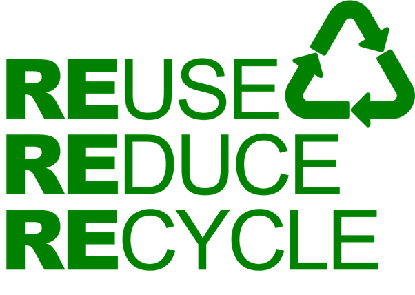
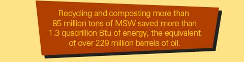
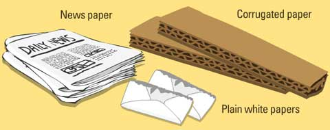

Importance and benefits of waste recycling
Recycling helps protect the environment:
This is because the recyclable waste materials would have been burned or ended up in the landfill.
Pollution of the air, land, water and soil is reduced.
Recycling conserves natural resources:
Recycling more waste means that we do not depend too much on raw (natural) resources, which are already massively depleted.
Recycling saves energy:
It takes more energy to produce items with raw materials than from recycling used materials. This means we are more energy efficient
and the prices of products can come down.

Recycling creates jobs:
People are employed to collect, sort and work in recycling companies. Others also get jobs with businesses that
work with these recycling units. There can be a ripple of jobs in the municipality.
Here is how paper waste is recycled
Collection, transportation and storage:
The biggest task for paper recycling companies is probably the collection, transporting and sorting of waste paper.
This is because we always add paper to other waste items and get them contaminated with food, plastics and metals.
Sometimes collected paper is sent back to the landfills because they are too contaminated for use.
Try to keep waste paper in separate grades at home or in the office —example, do not mix newspapers and corrugated boxes up.

All paper recovered is sent to the recycling center, where it is packed, graded, put into bales and sent to the paper mill.
At the mill, all the paper is stored in a warehouse until it is needed.
Next
Previous